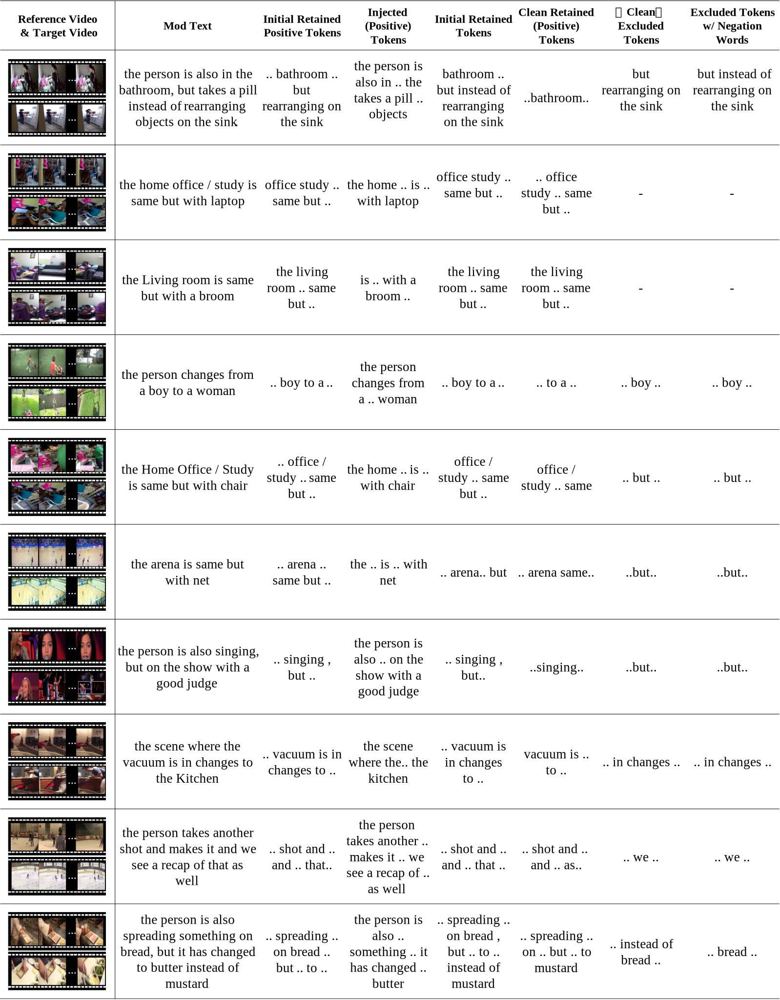

## Approach

<div style="text-align: justify; margin-left: auto; margin-right: auto;">
    Overall pipeline of FDCA involves fine-grained cross-modal alignment and fusion through the disentangling of text features. We further enhance this process by introducing token-level disentangling, where clustering is used to generate three types of features, enabling the model to focus on fine-grained information.
</div>